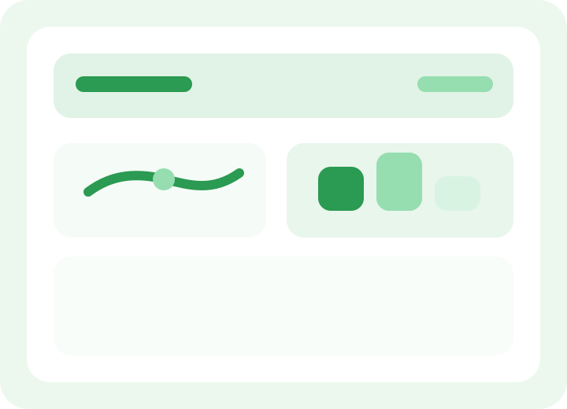

Field Log
North Plot and Livestock Board
06:30 AM
Soil moisture check requested
10:10 AM
Plant stress signs noted in row 4
01:20 PM
Livestock feeding completed and logged
05:00 PM
AI notification recommends recheck of irrigation timing
AI Summary
Crop and livestock signals suggest one area needs closer attention.
Uniquefarmz highlights that row 4 plant stress and irrigation timing may be linked, while livestock routines remain stable on the current board.